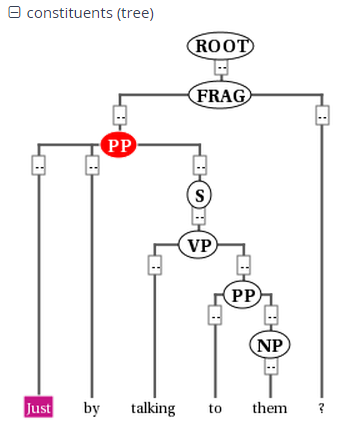

Searching for Trees
In corpora containing hierarchical structures, annotations such as syntax trees can be searched for by defining terminal or none-terminal node annotations, functional dependencies and their values (for dependencies see see Searching for Pointing Relations). A simple search for prepostional phrases in the GUM corpus looks like this:
const:cat="PP"
If the corpus contains no more than one annotation called cat, the
optional namespace, in this case const:, may be dropped. This finds
all PP nodes in the corpus. You can also search for the NP being
dominated by the PP like this:
cat="PP" & cat="NP" & #1 > #2
OR (using a shortcut):
cat="PP" > cat="NP"
To find all PP nodes directly dominating an adverb, you can combine a search for syntactic category and part-of-speech (pos) values (in this case "RB" for adverb). The query below gives the shortcut form:
cat="PP" > pos="RB"
The operator > signifies direct dominance, which must hold between the first and the second element. Once the Query Result tab is shown you may open the "constituents" annotation layer to see the corresponding tree.

Note that since the context is set to a number of tokens left and right of the search term, the tree for the whole sentence may not be retrieved, though you can change the amount of tokens at the top of each search result, or for all search results in the Search Options tab. To make sure that the whole clause is always included, you may want to specifically search for the clause or sentence dominating the PP. To do so, specify the sentence in another element and use the indirect dominance ( >* ) operator:
cat="ROOT" >* cat="PP" > pos="RB"
If the annotations in the corpus support it, you may also look for edge
labels. Using the following query will find all adverbial modifier NPs,
dominated by some node through an edge labeled ADV. Since we do not know
anything about the modified node, we simply use the node element as a
place holder. This element can match any node or annotation in the
graph:
node >[const:func="ADV"] cat="NP"
Again, the namespace const: is optional and only important if there
are multiple 'func' annotations. It is also possible to negate the label
of the dominance edge as in the following query:
cat >[func!="TMP"] cat
which finds all syntactic categories (value unspecified) dominating another syntactic category with a label other than "TMP".